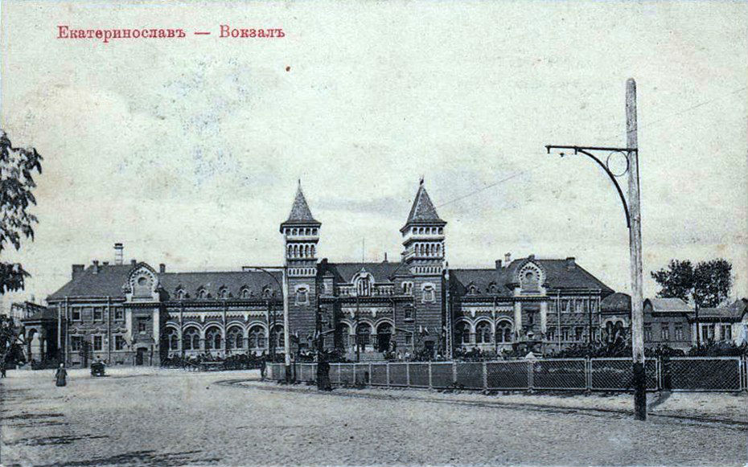
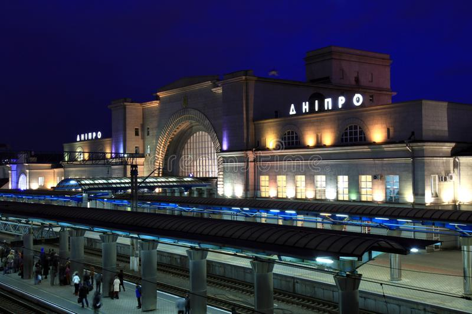
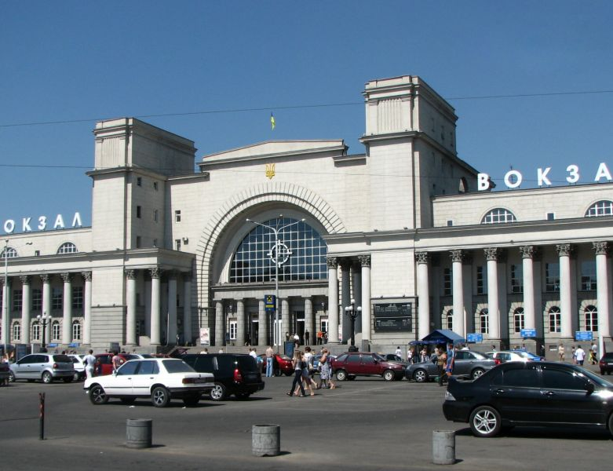

Історія вокзалу
Сучасна станція відкрита 1884 року під назвою Катеринослав, а 20 липня 1926 року постановою Президії ЦВК СРСР станцію, як й усе місто було перейменовано на Дніпропетровськ. Під час Другої світової війни будівлю вокзалу було зруйновано.
 
У 1951 році на тому ж місці за проєктом архітектора Олексія Душкіна зведено нову будівлю вокзалу в стилі сталінського ампіру. Сама споруда має довгасту прямокутну форму. Посередині розташований центральний вхід у внутрішні приміщення і до залізничних колій вокзалу. Він стилізований під арку, яка повністю покрита склом. З двох сторін арки виступають два пілона, які трохи вище самої будівлі. У них розташовані приміщення для службовців «Укрзалізниці». З обох боків від центрального входу розміщені симетричні праве і ліве крила вокзалу. Вони щільно обнесені величезними колонами, які вінчаються листяним декором у корінфському стилі, де розташовуються зал чекання, кафе, довідкове бюро, каси продажу проїзних документів на потяги, а також підземний пішохідний перехід. Будівля центрального залізничного вокзалу є основною, але не єдиною частиною архітектурної композиції Вокзальної площі. При виході з головного вокзалу, праворуч можна побачити житловий будинок, що гармонійно доповнює весь ансамбль площі. Навпроти нього розташований п'ятиповерховий будинок, який не має гострого кута, а поступово повертає на головний проспект міста. Навпроти самої будівлі вокзалу розташований семиповерховий будинок, двоярусна структура якого перегукується зі структурою головної залізничної станції.
У 2018 році вокзал станції Дніпро-Головний увійшов у Топ-10 (5-те місце) найбільш завантажених вокзалів України, який обслужив 3,3 млн пасажирів у далекому сполученні (з них посадка — 1,6 млн пас./висадка — 1,6 млн пас.). Від станції Дніпро-Головний щоденно курсує фірмовий пасажирський поїзд «Дніпро». Коли від перону залізничного вокзалу відходить у столицю України фірмовий поїзд «Дніпро», з репродукторів лунає традиційний марш «Прощання Слов'янки», а по прибутті поїзда зі столиці — лунає «Пісня про Дніпро». У жовтні 2019 року на вокзалі станції Дніпро-Головний відкритий зал чекання для військовослужбовців.
Локація